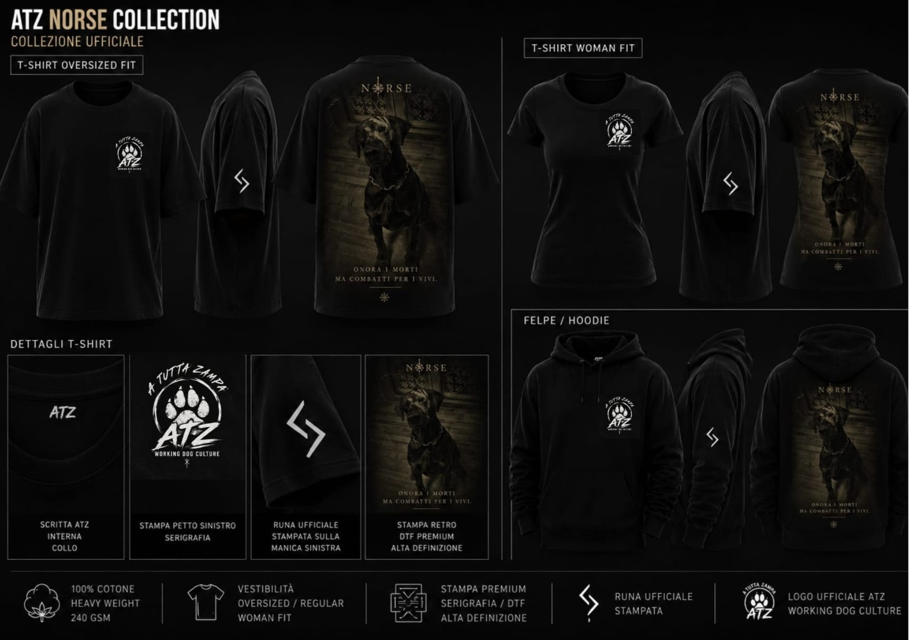
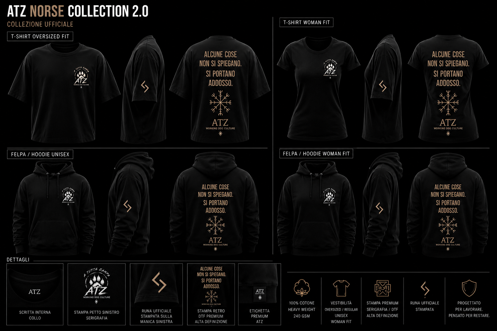
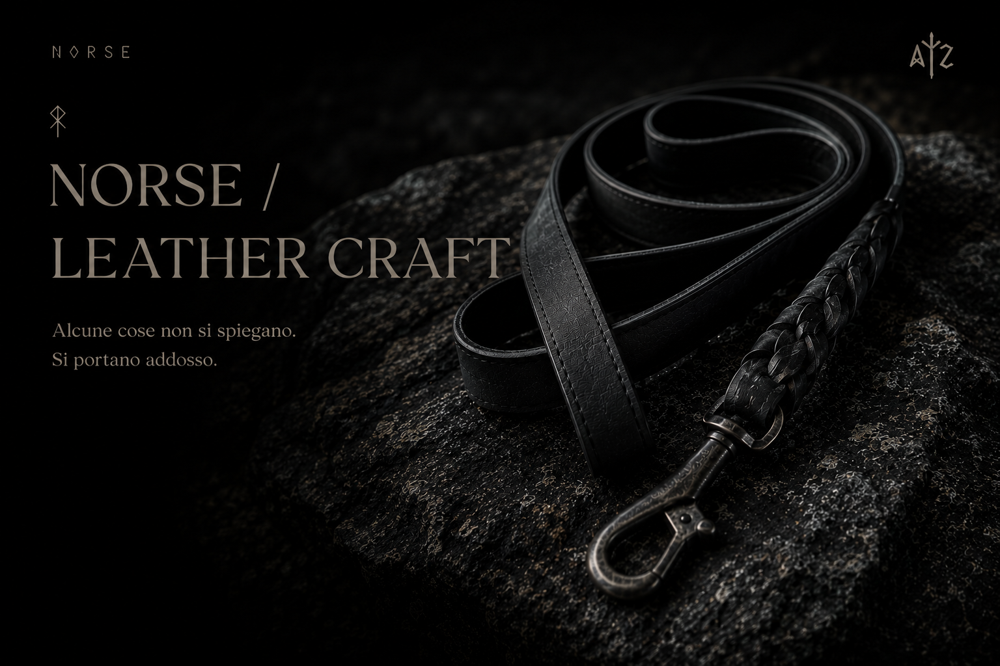

ATZ
MERCH
NORSE COLLECTION 2.0
ONORA I MORTI.
COMBATTI PER I VIVI.
Una collezione dedicata ai simboli che sopravvivono al tempo.

NORSE 01
Onora i morti. Ma combatti per i vivi.
Una collezione nata per chi porta con sé valori più antichi della moda.
SCOPRI IL CAPO

ALCUNE COSE NON SI SPIEGANO. SI PORTANO ADDOSSO.
Ci sono simboli che non appartengono alla moda.
SCOPRI IL CAPO

LEATHERCRAFT
Collari e guinzagli in pelle realizzati artigianalmente.
Alcune cose non appartengono alla moda.
Appartengono al tempo.
SCOPRI LEATHERCRAFT
MITO
Alcune storie attraversano i secoli.
Alcuni simboli continuano a parlare.
Non servono spiegazioni.
Servono rispetto, memoria e significato.
SCOPRI IL MITO